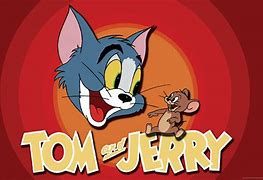

Cartoon Network (often abbreviated as CN) is an American cable television channel owned by the Warner Bros. Discovery Networks subsidiary of Warner Bros. Discovery. It is a part of The Cartoon Network, Inc.b, a division which also has the broadcasting and production activities of Adult Swim, Cartoonito, Boomerang, Discovery Family, and Discovery Familia under its purview.
Founded by Ted Turner (who appointed Betty Cohen as the first president of the network), the channel was launched on October 1, 1992, and primarily broadcasts animated television series, mostly children's programming, ranging from action to animated comedy. It currently operates from 10 a.m. to 8 p.m. ET/PT on weekdays, 6 a.m. to 8 p.m. ET/PT on Saturdays and 6 a.m. to 9 p.m. ET/PT on Sundays. Cartoon Network primarily targets children aged 6–14, while its early morning Cartoonito block is aimed at preschoolers and kindergarteners aged 2–6, and the channel shares channel space with its sister network Adult Swim, which targets older teenagers and young adults, 18–34.
| Shows | Image | Showtimes |
|---|---|---|
| Scooby Doo |  |
05-04-1995 8:30am - 9:00am |
| Flintstones | 05-04-1995 9:15am - 9:45am | |
| Jestons | 05-04-1995 10:00am - 10:30am | |
| Tom and Jerry |  | 05-04-1995 10:45am - 11:15am |